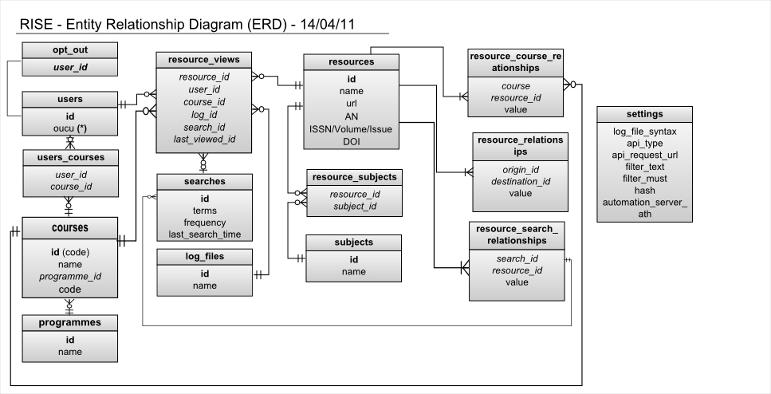

Provide relationship based recommendations
Author
Paul Grand
RISE, Open University
Purpose
To provide, given a searcher’s last two viewed e-resources (via the EZProxy logs and/or
MyRecommendations), recommendations as to serial articles or other e-resources that might be
indexed in EBSCO EDS.
Background
To investigate the hypothesis that recommender systems can enhance the student experience in
new generation e-resource discovery services.
Ingredients
- RISE database
- MyRecommendations web service
- Logged in user with OUCU (OU computer username to yield integer user ID in the RISE database
Assumptions
- The user has previously viewed resources that are stored in the RISE database
Warnings
If there are no previously viewed resources by the user then there will be no recommendations
made.
Method
MyRecommendations does the following
- Uses OUCU to obtain the user’s numeric ID (done earlier before this particular processing)
- Uses the numeric user ID to find the user’s last viewed resources, limit 2, returns resource IDs
- Users view resources in order. Let’s imagine that some users have looked at resource A then resource B immediately afterwards. This will be stored in the RISE database. Now imagine our current user looks at resource A. We would like to retrieve resource B as a recommendation.
We have a numeric id for resource A, so we interrogate the RISE database to see which resources were viewed (by any user) after resource A. With simple numeric counts derived from database entries, we can determine the most frequently viewed resources following the viewing of resource A. These resources form the basis of the recommendations.
In actuality the top four recommendations (ie most viewed/rated, see the numeric index information below) yielded from the user’s last two viewings are used as the recommendations. Also, a value field is used in forming recommendations, where this is set by users rating the quality of recommendations (+2 for useful, +1 for viewed, -1 for not useful).
Output data
Appears in every page, including the search results page. Shows up to the top four items most
accessed/rated by people who viewed the same items (now and historically)
|
Title
|
Some Sample Title
|
|
URL
|
http://.../.../.../
|
|
ISSN
|
12345678
|
Appendix A: MyRecomendations web service source code
Appendix B: ER diagram for RISE database



{kind=link}